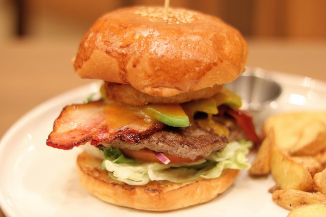
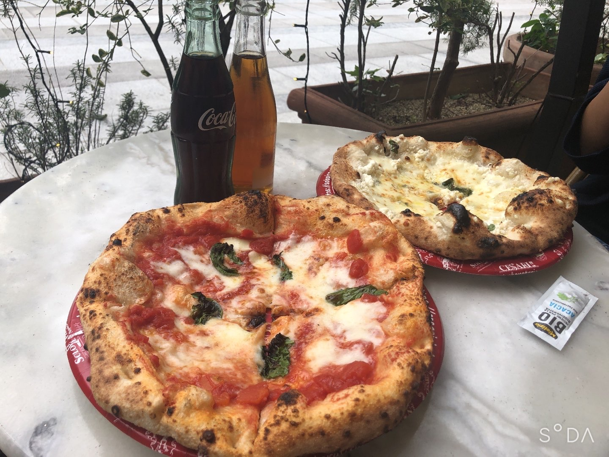
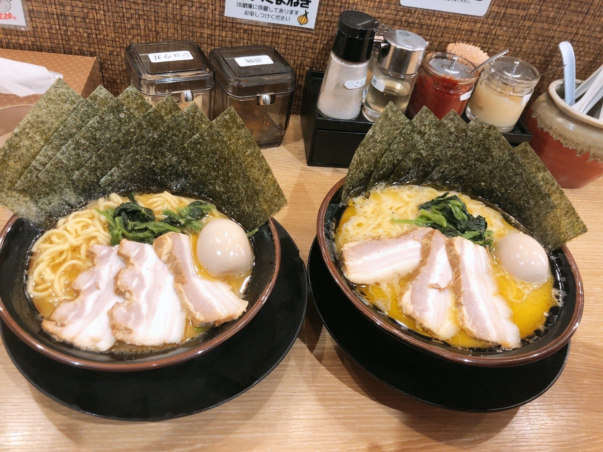

一つ目のお店は名古屋駅ゲートタワー13階にあるカフェとハンバーガーのお店で落ち着いた雰囲気が特徴のお店です。
ここでは人文好みにハンバーガーをカスタマイズして注文ができる他、おしゃれなパンケーキやパフェなどを食べる事ができます。
二つ目のお店は大名古屋ビル一階のピザ屋さん、SoloPizzaです。
このお店はナポリピザのチャンピオンのお店であり、それにふさわしい美味しさのピザを食べる事ができます。値段も1000円前後と良心的なのでぜひ行ってみてください。
最後に名古屋駅銀時計側にあるラーメン屋、銀やを紹介します。
ここは横浜家系のラーメン屋さんでモチモチの中太麺と濃いめのThe家系って感じのスープが特徴です。ここも1000円前後の価格で食べる事ができるうえ、メニューも豊富でチャーシュー丼なども美味しいのでぜひ行ってみてください。
2024年4月19日制作終了